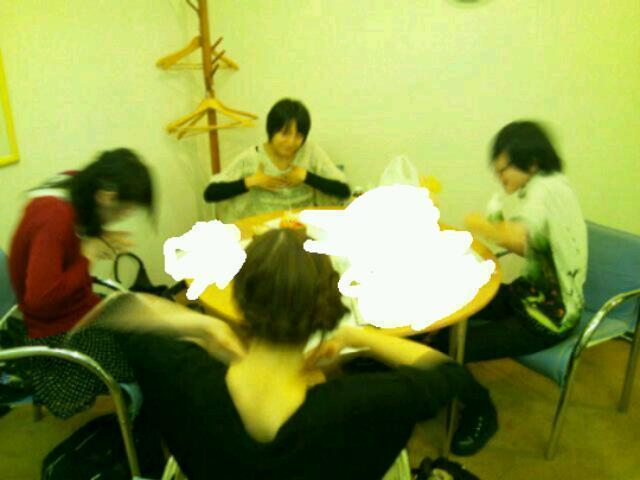
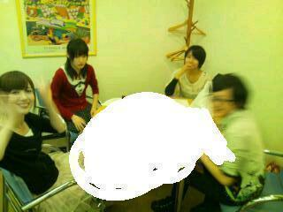
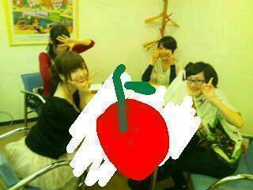

2012/1027Satすきだよっそういうのっ(o・・o)
おはよーっ(o・・o)
さゆりんごです！
新曲のレコーディングがありました！
レコーディングの前の待ち時間は
各自で練習してるんですが、
昨日はライブの後やったから
みんなテンション高くて...

めっちゃブレてる(笑)
何枚か撮ったんやけどね
全部ぶれてた(笑)
みんな激しすぎ(笑)

あっ！気づいた！(生駒はブレ、かずみは疲れてるww)
はい、チーズっ(o・・o)/

うん！みんないい笑顔♪(かずみ以外)
こんな愉快な乃木坂。
素敵やね♪
今日は横浜で個別の握手会です！
３ｒｄの最後なんかな(>_<)
天気は大丈夫かな〜(>_<)？
来てくださる方は
よろしくお願いします♪
たくさん楽しみましょう＼(^_^)(^_^)／
そして、４ｔｈの選抜発表のブログで
迷うな！松村！と書いた私ですが
早速、迷っている...。
それは！！ずばり４ｔｈの髪型やー！！
今までの３枚
私はサイドポニーを基本形にして
サイトのプロフィール写真も全て
サイドポニー...
４枚目...どぅぅするぅぅぅ？
いつもはスタッフさんに指示を仰ぐ松村。
４枚目なんで
皆さんの意見も参考にさせて頂きたいのです(>_<)
やっぱり安定のサイドポニーなのか
みんな大好きポニーテールなのか
ちょっとキツくなってきたツインテールなのか
初めての試みの みつあみ！
めっちゃ髪長いけどストレートなのか
ゆるふわの巻き髪か！
お嬢様くくりと松村は呼んでるハーフアップなんか...
さぁ、どれ！？
今日の個別、会話に困ってる方は
一緒に悩んでください(笑)
今日来られないかた！
さゆりんを想像して一番いいと思う髪型
教えてください(>_<)
あなたの意見が今後の松村を左右する！かもしれない(笑)
握手会よろしくお願いします♪
お待ちしてます♪
コメントもお待ちしてます♪＼(^_^)(^_^)／
ほなら、またね〜(*^^*)
2012/10/27 04:18
コメント(437)
ショーと見てみたいな!
みつあみイイね！
見てみたい( ´ ▽ ` )ﾉ
見てみたい( ´ ▽ ` )ﾉ
ストレートかな
つか机は散らかってるから落書きで誤魔化したのかな！？
この記事で103回更新だよ
これからは数字いれていってね
つか机は散らかってるから落書きで誤魔化したのかな！？
この記事で103回更新だよ
これからは数字いれていってね
思い切ってショート!…すいません(´・ω・｀)
・
ハーフアップに一票!
・
ハーフアップに一票!
握手会行きたーい(;´д｀)
オレはツインテールかなぁ？？
でも何でもかわいいよ～(*￣∇￣)
オレはツインテールかなぁ？？
でも何でもかわいいよ～(*￣∇￣)
みつあみのさゆりんも見てみたいけど、やっぱりツインテールでしょ！
うん！ツインテールにしよう！！！
さゆりん絶対だよｗｗｗ
さゆりん大好き(^3^)/
うん！ツインテールにしよう！！！
さゆりん絶対だよｗｗｗ
さゆりん大好き(^3^)/
ストレートに一票！(^.^)
4時更新ってまっつん寝た？
忙しいね
てか最近更新率高くてビックリ！笑
今日は3rd最後の握手会！
楽しもうぜ(((o(*ﾟ▽ﾟ*)o)))
さかちょん
4thは少し髪を切って全部おろしたらいいと思う
まっつん髪のボリュームがあるからね
まっつん髪のボリュームがあるからね
やっほー(o・・o)
パシフィコなう。若干空模様が怪しい
雨女は誰やぁ(笑)
髪型とかは後で答えるわ。
さっきも言ったけど昨日さゆりんボード見付けてくれてありがとなぁ
作っていったかいがあったわ
パシフィコなう。若干空模様が怪しい
雨女は誰やぁ(笑)
髪型とかは後で答えるわ。
さっきも言ったけど昨日さゆりんボード見付けてくれてありがとなぁ
作っていったかいがあったわ
こんにちわ
まりかちゃん推しのぴぽです
サイドポニー
まりかちゃん推しのぴぽです
サイドポニー
サイドポニーわ ぶっちゃけ推してません(^_^;)
ぢゃばね(^_-)
ぢゃばね(^_-)
まっつんからまっちゅんへ
何回更新するんよー！
ま、うれしいけどな。
今の髪型めちゃ好きやから、今のままかな…
またあとでお話しましょう！
何回更新するんよー！
ま、うれしいけどな。
今の髪型めちゃ好きやから、今のままかな…
またあとでお話しましょう！
さゆりん握手会頑張ってなー！
ゆかゆか
ゆかゆか
さゆりん、絶対ツインテール
4.5.6枚目は、ツインテールで決まり
さゆりん、写真撮るの下手すぎやね
4.5.6枚目は、ツインテールで決まり
さゆりん、写真撮るの下手すぎやね
オッス!! さゆりん!!
今、会場に居るよ!!『とも・とも』だよ。
髪型迷っているのか。
そうだねぇ～サイドポニーは安定だねぇ～ みつあみも見てみたいし
う～ん…
答えは握手の時!!
以上!! 会場に続く。
今、会場に居るよ!!『とも・とも』だよ。
髪型迷っているのか。
そうだねぇ～サイドポニーは安定だねぇ～ みつあみも見てみたいし
う～ん…
答えは握手の時!!
以上!! 会場に続く。
レコーディングお疲れ様です！！
さゆりーん、写真ブレまくりじゃないですかー(笑)
生駒ちゃん、全然写ってないし！！
今後のさゆりんを左右するか・・・
これは慎重に・・・
ってポニーテールしかないでしょ！！！
（慎重じゃないのかよ！！）
逆にポニーテールじゃないと、今後のオレを左右するよ。
・・・って嘘です、好きな髪型にしてね(笑)
ポニーテールが見たいのはほんとですよー！
さゆりーん、写真ブレまくりじゃないですかー(笑)
生駒ちゃん、全然写ってないし！！
今後のさゆりんを左右するか・・・
これは慎重に・・・
ってポニーテールしかないでしょ！！！
（慎重じゃないのかよ！！）
逆にポニーテールじゃないと、今後のオレを左右するよ。
・・・って嘘です、好きな髪型にしてね(笑)
ポニーテールが見たいのはほんとですよー！
おはりんごー(・∀・)ノ
さゆりんといったらサイドポニー
って感じだけど4thはストレートがいい！！
さゆりんといったらサイドポニー
って感じだけど4thはストレートがいい！！
初コメです(o･д･)
さゆりんごのサイドポニーすごい好きだよー！
でもたまには変えてみるのがいいと思う♪
個人的にさゆりんの可愛い顔にはハーフアップで毛先くるくるふわふわにしたらいいと思いまーす♡♡
今日がんばってなー(*⌒▽⌒*)
さゆりんごのサイドポニーすごい好きだよー！
でもたまには変えてみるのがいいと思う♪
個人的にさゆりんの可愛い顔にはハーフアップで毛先くるくるふわふわにしたらいいと思いまーす♡♡
今日がんばってなー(*⌒▽⌒*)
写真ほとんどぶれてるな
俺は横浜の握手会いけないけどさゆりんのポニーテールみてみたい
俺は横浜の握手会いけないけどさゆりんのポニーテールみてみたい
ﾊﾟｼﾌｨｺなあたあ。
さゆりんはやっぱツインテール!!笑
まいやんの可愛さ超えてみろ!!笑
まさやん
まいやんの可愛さ超えてみろ!!笑
まさやん
まいやんも、いつかのブログで言ってたけど、
まっちゅんのストレートがめっちゃ好きです♪
４ｔｈは｢いい女、松村｣で行きませんか？
あ、もちろん、今も、ある意味｢いい女｣だけど｡｡｡（笑）
｡｡｡｡｡｡
まっちゅん好きだぁ～～っ！
と、ごまかしておく｡｡｡( ﾟДﾟ)ﾅﾆｶ?
まっちゅんのストレートがめっちゃ好きです♪
４ｔｈは｢いい女、松村｣で行きませんか？
あ、もちろん、今も、ある意味｢いい女｣だけど｡｡｡（笑）
｡｡｡｡｡｡
まっちゅん好きだぁ～～っ！
と、ごまかしておく｡｡｡( ﾟДﾟ)ﾅﾆｶ?
さゆりんご！
うぉー(ﾟДﾟ)！ 怒涛のブログ更新ラッシュ(笑)
俺的にはポニーテールがいいなぁヽ(ﾟДﾟ)ﾉ
ポニーテールにしてぇ(^O^)
(●´∀｀●)(●´∀｀●)(●´∀｀●)(●´∀｀●)(●´∀｀●)(●´∀｀●)(●´∀｀●)(●´∀｀●)(●´∀｀●)(●´∀｀●)(●´∀｀●)(●´∀｀●)しょーだい
うぉー(ﾟДﾟ)！ 怒涛のブログ更新ラッシュ(笑)
俺的にはポニーテールがいいなぁヽ(ﾟДﾟ)ﾉ
ポニーテールにしてぇ(^O^)
(●´∀｀●)(●´∀｀●)(●´∀｀●)(●´∀｀●)(●´∀｀●)(●´∀｀●)(●´∀｀●)(●´∀｀●)(●´∀｀●)(●´∀｀●)(●´∀｀●)(●´∀｀●)しょーだい
4thシングルはストレートやろ！
梨しか～(笑)
梨しか～(笑)
どうした？
昨日から恐ろしい更新ペース(>_<)
今みなとみらいにむかってるけどなんか天気がやな感じだね(^o^;
かずみんはあれだけアメイジング連発した疲れなんでは？
昨日から恐ろしい更新ペース(>_<)
今みなとみらいにむかってるけどなんか天気がやな感じだね(^o^;
かずみんはあれだけアメイジング連発した疲れなんでは？
新曲楽しみにしてます。
どうもっ（・－・）/
レコーディングお疲様です。
またぶれてる・・・
シゲマコに２０ダメージ!!!!
最後の写真でシゲマコは３０００００回復（笑）
仲の良いことですなぁ。
そういう乃木坂がおいどんは好きです。
僕はいつものさゆりんごの髪型がいいですよ(*⌒∇⌒*)
行けないけど・・・（泣）
行けないけどわしのさゆりんご愛はハンパないっすよ!!!!
あっ猫が寝てる（笑）
でへへへへへっ
どりゃ～～～～○￣□￣)=○
起きました（笑）
噛まれました（笑）
シゲマコに２ダメージ!!!!
では、いつも言ってますが受験が終わったら
握手会に行きます。
ちゃんと遠くから応援していますだ。
頑張ってくださいね。
お体にお気をつけてぇ。
こんにちは♪
自分はポニーテール希望です(^-^)
4thの握手会は必ず行きます！
では、今日も１日頑張ってください(^-^)v
バイバイです(^_^)/~~
ツインテール！！！
まだまだイケるって(^○^)
まだまだイケるって(^○^)
4部行くで
さゆりんの三つ編みが見てみたいよ！
横浜個握残念ながら行けないから、ブログの報告楽しみにしてるねo(^▽^)o
横浜個握残念ながら行けないから、ブログの報告楽しみにしてるねo(^▽^)o
沖縄最高！
さゆりん髪全部おろして～
さゆりん( ´ ▽ ` )ﾉ
握手会いいなぁ( ´Д`)y━･~~
愛知から遠くていけなかったヽ(；▽；)ノ
高校生だし、おかねが…Σ（ﾟдﾟlll）
次の握手会たのしみ( ´ ▽ ` )ﾉ
握手会いいなぁ( ´Д`)y━･~~
愛知から遠くていけなかったヽ(；▽；)ノ
高校生だし、おかねが…Σ（ﾟдﾟlll）
次の握手会たのしみ( ´ ▽ ` )ﾉ
さゆりんもはようごじゃいましゅ(ρд-)
横浜着いて待機なうだよー
枚数少ないけど…頑張って話すねー☆
うちの特徴
普通の人より目立つポジションからくるよー
乃木坂カラーだよー
さゆりんしかだよーほんま大好きっ！！
陽菜ってはるなだよー
おはよ(^-^)
今日行けんでごめんね(>_<)
ほんとは行きたかったんよ!
でも行けんかったんよ(泣)
4thはちゃんと行くけん
でも２ヶ月ほんま長いわ…
安定のサイドポニーしか＼(^o^)／
今日行けんでごめんね(>_<)
ほんとは行きたかったんよ!
でも行けんかったんよ(泣)
4thはちゃんと行くけん
でも２ヶ月ほんま長いわ…
安定のサイドポニーしか＼(^o^)／
さゆりんこんにちは！
髪型でお悩みですか…
僕の意見としてはハーフアップかツインテールを希望します！
さゆりんを想像してこの２つがいいと思ったので、検討してみてね＼(^o^)／
髪型でお悩みですか…
僕の意見としてはハーフアップかツインテールを希望します！
さゆりんを想像してこの２つがいいと思ったので、検討してみてね＼(^o^)／
ブログ更新率高くて嬉しい♪
さゆりんごはもとが可愛すぎるから
なんでも髪型似合う(^o^)
可愛いってのは得するね～(^○^)
新たな髪型がんばって挑戦してね♪
さゆりんごはもとが可愛すぎるから
なんでも髪型似合う(^o^)
可愛いってのは得するね～(^○^)
新たな髪型がんばって挑戦してね♪
お相撲さんのチョンマゲ髪型で
さゆりん～
今日個別の握手会行くよー
楽しみだわ～
今日個別の握手会行くよー
楽しみだわ～
さゆりんこんにちは♪
握手会顔晴って
ください！
4thは多分行きます！笑
髪型ですかあ...
4thの曲調とかまだ
分からないんで何とも
言えませんが...
個人的にハーフの
ゆるふわ希望です！←
ではではっ
今日も一日顔晴ってください！
おはよー！
ポニーテールっしょー
ばりかわえー
握手会行けない泣
きゅうしゅうのばかやろー
髪型かー。
ハーフツインは途中で恥ずかしくなるかも笑
でもツインだったら堂々と可愛いはず。
てことでツインでどう？
巻いた感じのがいいかも。
じゃこれを握手のとき言おっかなー。
んーでもさゆりんごサソリ固めも捨て難い。
・・・そんなのはない笑
ハーフツインは途中で恥ずかしくなるかも笑
でもツインだったら堂々と可愛いはず。
てことでツインでどう？
巻いた感じのがいいかも。
じゃこれを握手のとき言おっかなー。
んーでもさゆりんごサソリ固めも捨て難い。
・・・そんなのはない笑
さゆりんりん
さゆりんご！
さゆりん
連日の更新やね
握手会1部終わって物販並んでる
5部は部はBLTtシャツきていくよ
それでは
後程
さゆりんご！
ここは直感で三つ編みで！新たなさゆりんごの誕生でしょ！思い切って角刈りなんて選択肢も・・・。(笑)
今までとは違うさゆりんごを見たいなぁ。
(笑)
ブログ更新頑張ってるね。
ばいなら！
ばいなら！
p(^^)q
ここは直感で三つ編みで！新たなさゆりんごの誕生でしょ！思い切って角刈りなんて選択肢も・・・。(笑)
今までとは違うさゆりんごを見たいなぁ。
(笑)
ブログ更新頑張ってるね。
ばいなら！
ばいなら！
p(^^)q
みつあみーーヽ(*´∀｀)ノ
４th楽しみにしてます(´・ω・)
握手会頑張ってください(｀・ω・´)
４th楽しみにしてます(´・ω・)
握手会頑張ってください(｀・ω・´)
さゆりんさん、おはようございます
最近の怒濤のブログ更新ラッシュ、すごいですね笑
まあ、ファンとしてはありがたい限りですよ。
さて、4thの髪型で悩まれていると言うことですが、
僕は、今までのサイドポニーは捨てて欲しいと思います。
新たなさゆりんが見たい
なので、ポニーテールか、ツインテールを希望します。
個人的には、ツインテールでお願いしたいです。
惣流・アスカ・ラングレーみたいな。
桜の稲垣早希さんだって、今でもツインテールで頑張っていらっしゃるので、
さゆりんだって、まだまだ大丈夫です。
ということで、僕は『ツインテール』に1票を投じたいと思います。
僕の意見が反映されるかは、わかりませんが笑
4th楽しみにしてますね
それでは。
最近の怒濤のブログ更新ラッシュ、すごいですね笑
まあ、ファンとしてはありがたい限りですよ。
さて、4thの髪型で悩まれていると言うことですが、
僕は、今までのサイドポニーは捨てて欲しいと思います。
新たなさゆりんが見たい
なので、ポニーテールか、ツインテールを希望します。
個人的には、ツインテールでお願いしたいです。
惣流・アスカ・ラングレーみたいな。
桜の稲垣早希さんだって、今でもツインテールで頑張っていらっしゃるので、
さゆりんだって、まだまだ大丈夫です。
ということで、僕は『ツインテール』に1票を投じたいと思います。
僕の意見が反映されるかは、わかりませんが笑
4th楽しみにしてますね
それでは。
そして
楽しんで
では今日は
短くて
たーちゃんより
さゆりんて結ったらサイドポニーだけど
たまには三つ編みとかがいいなー
でもふつうにおろしてたほうがさゆりんポイよ
だからこまっちゃんはおろしで
こまっちゃん
今日個別いけなーいんだー
ゴメンネ
次のシングルの
全握と個別行くから
楽しみに待っててね
写真ブレとる
さゆりんらしい
握手会がんばってネ
ムリしないでね
たまには三つ編みとかがいいなー
でもふつうにおろしてたほうがさゆりんポイよ
だからこまっちゃんはおろしで
こまっちゃん
今日個別いけなーいんだー
ゴメンネ
次のシングルの
全握と個別行くから
楽しみに待っててね
写真ブレとる
さゆりんらしい
握手会がんばってネ
ムリしないでね


今横浜向かってる。
髪型は、さゆりんらしく、サイドポニーがやっぱ1番かな？
さゆりんらしくね。。
もうすぐさゆりんに会えるよ。嬉しい